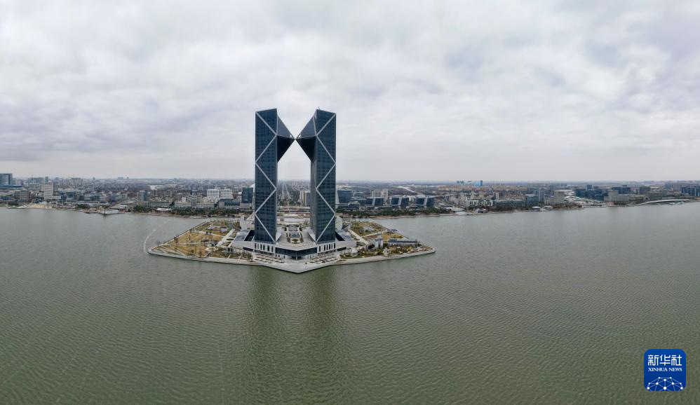
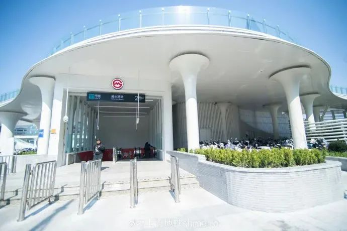

上海临港 · 滴水湖
明年7月，南汇支线通车。这个月，16号线先在中午加了两班直达车。
早上七点半，16号线滴水湖站，往龙阳路方向的直达车开出。
中途不停。34分钟，到终点。
这班车，以前是没有的。9月28日调图之后，工作日的午间又多出两班直达车，双向都是12:30发车。
一座新城的交通，常常不是从剪彩那天开始变的，是从时刻表上多出来的几行字开始的。
2026年9月28日起，16号线工作日午间增开2班直达车，龙阳路站、滴水湖站12:30双向发车，全程约34分钟。
2026年8月21日，临港新片区管委会专职副主任唐浩在市政府新闻发布会上说：明年7月，市域线南汇支线建成通车。

滴水湖西岛，中银金融中心双子塔。2026年1月29日摄。图源：新华社记者 方喆 摄
01
午间那两班车，已经开了
先说已经落地的。
9月28日起，16号线在工作日午间增开2班直达列车。龙阳路站、滴水湖站，双向发车时间都是12:30。全程约34分钟，中途各站不停。
调整之后，16号线工作日每天有6班直达车。
直达车时刻表
| 龙阳路 → 滴水湖 | 7:30、7:45、12:30 |
| 滴水湖 → 龙阳路 | 12:30、17:20、18:00 |
要提醒一句：这次只动了直达车。大站车的时刻没变，普通车也没变。
赶时间就认准“直达”两个字，别在站台上凭感觉等。
为什么补在中午？官方的说法是，服务新片区与市区之间的午间商务出行。早上和傍晚的直达车早就有了，中午这一段一直空着。现在补上了。
对住在湖边的人来说，中午进城办个事、看个病、见个客户，不用再掐着大站车的停站算时间。

16号线滴水湖站2号口。图源：上海地铁
02
真正的重头戏，在明年7月
更大的变化不在16号线，在南汇支线。
8月21日的市政府新闻发布会上，临港新片区管委会专职副主任唐浩把时间说得很直接。
“临港从区位上看现在是交通末梢……明年7月份市域线南汇支线将建成通车，届时临港到浦东机场、上海东站以及中心城区会越来越便捷。”
——临港新片区管委会专职副主任唐浩，2026年8月21日
这条线全长34.86公里，全线6座车站，新建4座。主线从浦东T3航站楼站引出，经鹏翔路、滨海森林公园、星海湾路，到滴水湖北站。东支线接上海东站。设计时速160公里。
按规划目标，临港主要节点15分钟到浦东枢纽、60分钟到虹桥枢纽。它和机场联络线贯通运营，去虹桥不用中途换车。
终点滴水湖北站是地下站。设计里留了个细节：顶板开了四处钢结构天窗，寓意“临港晨露”。
建设中的南汇支线高架段。图源：上海申铁
进度也对得上。8月15日，全线最后一榀箱梁落位，主线、支线结构贯通，664榀箱梁全部架完。9月初，沿线变电所开始受电。
接下来是铺轨、机电安装、联调联试。剩下的活不显眼，但一步都省不了。
03
三个容易想当然的地方
第一，别把两个站名看混。
南汇支线停的是“滴水湖北站”，16号线是“滴水湖站”。名字只差一个字，位置不是一处。
开通后怎么接驳，要等公交方案出来。现在别按“出站就换乘”去想。
第二，“明年7月”是官方口径，具体日期等官宣。
从结构贯通到载客，中间还有联调联试、试运行、验收。一条线真正开门那天，往往比结构贯通晚不少。
第三，15分钟是目标，不是每趟车都能跑到。
大站快车才可能压到这个数，站站停会慢一些。买机票的时候，还是按平时的节奏留时间。
另外两件事也在推进：S2沪芦高速拓宽改造，沪通铁路二期。临港要补的不是一条线，是一张网。
04
这笔账，普通人怎么算
赶飞机。以后从滴水湖北站上车，到浦东机场，按规划目标是15分钟。现在打车走S2，路上少说也要四十分钟。
通勤。16号线直达34分钟到龙阳路，这是当下就能用的。南汇支线通了以后，去上海东站、虹桥多一个选择。
过周末。反过来也成立：市区的人来滴水湖会更方便。湖边一圈8公里，跑步道、骑行道都在，风大，人少。
要记住的就三件事。
一，工作日12:30，龙阳路和滴水湖各发一班直达，34分钟。
二，南汇支线停滴水湖北站，不是16号线滴水湖站。
三，开通时间以官宣为准，别按某一天去定行程。
临港被叫了很多年“交通末梢”。这个词不是别人说的，是管委会自己在发布会上讲的。
改起来不快。一条市域铁路，从开工到通车，要跨过好几个年头。
但变化会集中在某一刻出现：站牌亮起来，列车进站，15分钟后，你已经站在浦东机场。
那一天，你最想从滴水湖北站去哪儿？
评论区聊聊。要是最近就要用上，记得把上面那张时刻表存下来。
本文信息截至2026年10月28日。来源：上海发布、上海市交通委员会、上观新闻、新华社。